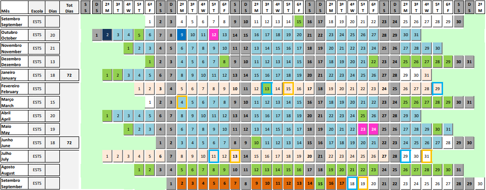

IPS

Bem-vindo ao nosso site de gestão de salas e horários do Instituto Politécnico de Setúbal (IPS). Estamos entusiasmados por apresentar uma ferramenta dedicada à comunidade acadêmica do IPS, que simplifica e otimiza a gestão de salas e horários, tornando a sua vida acadêmica mais eficiente e conveniente. A nossa plataforma foi projetada pensando nas necessidades dos estudantes, professores e funcionários do IPS. Aqui, você encontrará recursos poderosos que lhe permitirão consultar e reservar salas de aula, laboratórios e espaços comuns de forma rápida e descomplicada. Além disso, nosso sistema de gestão de horários garante que você sempre esteja atualizado sobre suas aulas, eventos e atividades, proporcionando um cronograma acadêmico organizado e transparente. No IPS, acreditamos que o acesso fácil à informação é fundamental para uma experiência acadêmica bem-sucedida. Portanto, nosso site de gestão de salas e horários é um passo importante na direção de uma educação mais eficiente e satisfatória. Esperamos que aproveite ao máximo essa ferramenta e que ela contribua para o seu sucesso no IPS. Explore nosso site, reserve suas salas e mantenha-se atualizado com seus horários de aula. Estamos aqui para tornar sua vida acadêmica mais simples. Bem-vindo ao IPS, bem-vindo à sua jornada educacional simplificada.
Calendário Escolar

Início ano letivo Licenciaturas, 2º ano CTeSP/ Beginning of the academic year Bachelors, 2nd year CTeSP

Início ano letivo 1º ano CTeSP/ Beginning of the academic year 1st year CTeSP

Atividades letivas / Academic activities

Férias e feriados /Holidays

Atividades AAIPS / AAIPS activities

Recepção novos estudantes/Reception of new students

Inscrições para exames/Examination entry

Exames de 1ª e 2ª Época / Regular exams (1st and 2nd date)

Época especial /Special exams

Data limite de afixação de pautas/Limit date to publish results

Prazo final para entrega de Livros de Termos / Deadline for delivery of Terms Books